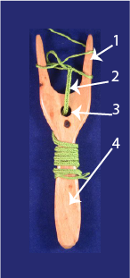
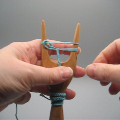
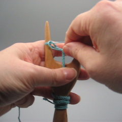
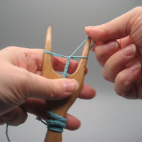
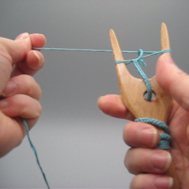
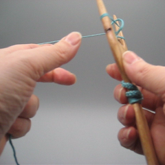
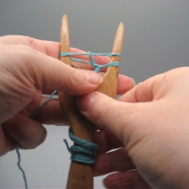

Supplies
You need a lucet, yarn, scissors and a needle with big enough eye for the yarn.
Lucet
Lucets come in many different shapes and sizes. You cannot use thick yarn with a very small lucet, but you can lucet with anything with a bigger lucet, if you just have enough patience. My preferred lucet is roughly 5 cm wide and has a handle, but others prefer lucets without a handle.
If you want to make a lucet for yourself or if you just want to see different types of lucets, there are in my blog photos of my lucet collection (I have linked the shops to the list when known). Besides wood, a lucet can be made of bone or printed on a 3D printer. I also have pictures of lucets in museums in my blog.
Anatomy of a lucet
A lucet has two prongs (or "horns"). The prongs (1) can be fairly sharp or totally blunt. On some lucets there is a hole (3) in the middle, but it is not a necessity, you can do fine without. Some lucets also have a handle (4), but you get exactly the same cord (2) on a handleless lucet. Some people find the handle is in the way, others - like me - feel it is a handy place to keep the finished cord.
Yarn
Especially in the beginning your yarn needs to be smooth. It'll also have to take a fair amount of pulling. Some 100% wool yarns are so fuzzy that they may cause difficulties, but merino and smoother sock wools work fine. I haven't tried acrylics, but there's no reason why smooth acrylic wouldn't work when smooth wool does. When I practice I mostly use cotton, for example crochet yarn or pearl cotton nr. 5. You can also use linen yarn, but it may be hard to find something thick enough - if you start with a very thin yarn, it may be difficult for you to see what you are doing and the cord grows very slowly. Viscose and silk can also be used, although if the yarn is very slippery, your first cords may turn out a bit loose in structure.
When you have gotten the basics down, you can experiment with a variety of yarns. Bumpy yarn doesn't work (the bumps get stuck), but evenly fuzzy yarns work out once you learn to regulate the tension. In my blog there are a few photos of my experiments. If you don't need to be historically accurate/inclined, space dyed yarns make fun cords. Even very short color changes that may look messy in knitting work out fine in luceting.
Be aware that a lucet cord eats yarn. My rule of thumb is 10:1, ten meters of yarn yields roughly a meter of cord. This rule seems to be true with most yarn weights.
Luceting a cord
Principle
In luceting there's only one set of movements that you repeat throughout the cord. Luceting is actually related to knitting (a two-stitch i-cord to be exact).
When you lucet you have on the left a loop and on the right a loop and a yarn. In the middle of the cord there's a little loop of yarn as well. To create the cord you pull the loop on the right away from the lucet, until the little loop in the middle disappears. Then you lift the loop you are holding over the prong. You pull the yarn from the skein a bit, then flip the lucet in a way that the right prong goes closest to your body. If everything went right, you have ended up in position where there's a loop on the left and loop and yarn on the right, so you can start over from the beginning. Note that in basic lucet the yarn never goes between the prongs, it always goes around the lucet.
Starting
Starting is actually harder than luceting later on. When you've managed to lucet a few rounds, the task gets easier. Try not to be discouraged if you have to try a few times before you get it.
- Take the lucet in your left hand and the end of the yarn in your right.
- Bring the yarn behind the lucet.
- Loop the yarn around the right prong. The end of the yarn ends up in front of the lucet.
- Pull the end until you have about 15 cm of free yarn. If your lucet has a hole, put the yarn through the hold. Place the yarn under the fingers of the left hand (that's holding the lucet).
- Take the yarn coming from the ball, it should be behind the lucet. Bring it round the left prong and to the front, then around the right prong to the back. The yarn makes a full round around the lucet without going between the prongs.
- Move the yarn (the one from the ball) into your left hand. In the beginning it may be a bit hard to hold both the lucet and the yarn, but that gets easier with practice.
- Around the right prong you have now a loop (lower down) and a yarn (higher up). Grab the loop and pull it gently away from the lucet. Lift the loop over the prong.
- Flip the lucet clockwise i.e. so that the right prong moves closest to you. If you did it right, you should again have a loop and a yarn around the right prong.
- Pull the right loop away from the lucet and then lift it over the prong. If the beginning of the cord in the middle of the lucet is loose, gently pull the yarn end to tighten it up. Now flip the lucet again.
- Pull the right loop away from the lucet until the little loop in the middle disappears, then lift the loop over the prong. If there's a large loop in the middle, you can make it slightly smaller by pulling the yarn running from the ball. Leave some looseness in the middle, you'll need it. Then flip the lucet and start over.
When you have a small start, you can proceed.
Luceting
|  | Make sure that the lucet is in a correct position: loop on the left, a small loop in the middle, loop and yarn on the right. |
|  | Grab the loop on the right. It is easier to get hold of it if you take it slightly in front of the lucet. |
 |
Pull the loop away from the lucet until the little loop in the middle disappears. Note that this defines the tension of your cord. If your cord is loose, try to pull the loop a bit further. If the cord is tight and the yarn doesn't want to move, pull a bit less at this phase. How far away from the lucet you pull the loop depends on the size of the loop in the middle and also the type of yarn. If you switch to a different yarn, you may have adjust your movements. |
|  | Lift the loop over the right prong. |
|  | Move the lucet to the right hand. With the left hand gently pull the yarn from the ball so that the loop in the middle (the one you just lifted) gets a bit smaller. Remember that you have to leave some loop there. |
|  | Flip the lucet clockwise, i.e. so that the right prong moves to the left closest to your body. |
|  | Move the lucet back to the left hand. If you flipped the lucet correctly, the yarn wound itself around the prong that ended up on the right. You are now back in the starting position. |
The above is not the only way to do basic lucet. If you find it clumsy to hold the yarn in your left hand and don't like moving the lucet from hand to hand, you can try luceting with the yarn in the right hand like I do in the video below. Also Ziggy Rytka has a video on this. I get up to my best speed in this technique, because it distills down to basically two movements: first I pull the loop away from the lucet, then I lift the loop and pull the yarn and flip the lucet all in one movement.
Ending
- When you want to end a cord, cut the yarn 15-20 cm from the lucet.
- Lift the next loop normally, but then pull through the yarn. Do not flip the lucet and do not touch the left loop, just pull the yarn until the former right side loop disappears. Now you only have a loop on the left.
- Put the yarn through the left loop. I haven't notice any big difference in the direction of the yarn, the main thing is that the yarn goes through the loop.
- Now you can lift the remaining loop off the lucet. Pull the yarn until the loop is tight. Now your cord is securely ended.
Finishing the cord
The yarn ends in the beginning and the end of the cord can be hidden in the cord. You need a needle for this. I mostly use blunt embroidery needles, for thicker yarn knitter's needles. Try to select a needle where the eye is just big enough to admit the yarn.
In some luceting books it is written that you can hide the end inside the cord as it is hollow. I have never managed this feat, instead I sew the yarn end onto the cord in an overcast stitch. I do this for couple of centimeters and then cut the yarn as close to the cord as possible. This way the end of the cord becomes a tiny bit thicker than the rest of the cord, but usually this doesn't matter.
The yarn I use on the video is very thick, but I use the same technique on pretty thin cords (linen cord of bobbin lace yarn was too thin to finish this way, I couldn't see the cord well enough).